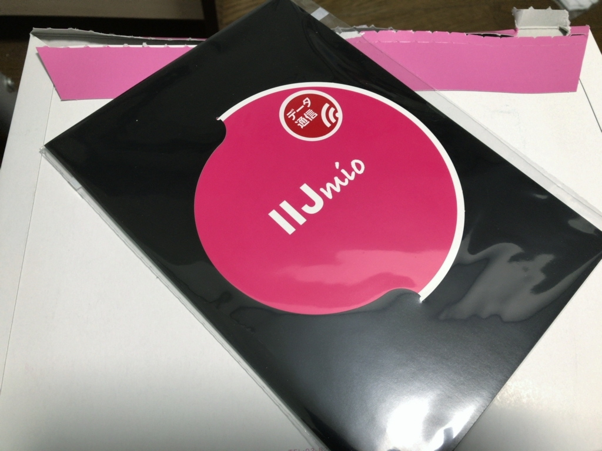

iPad Pro 10.5 インチにカバーと SIM を追加
執筆日時：
この前買った iPad Pro 10.5 インチだけど――
ハダカで使い続けるのも何なので（Apple Care も入ってないしな！）、適当にカバーを買ってつけてみた。
 - 3052")
純正お風呂のフタ Smart Cover のパチモノで、1,500円ぐらい。純正と同様、フタを閉じればスリープするし（動画を再生しながらフタを閉じて試した）、三角に折ればスタンドにもなる。違いは、背面と側面も守ってくれる点。防御力は少しアップするが、スマートさは若干低下する。
良し悪しはあるけど、個人的には純正よりも気に入ってる。何より、安い。特別優れたポイントはないけど、とくに大きな不満も感じなかったし、「なんでもいいや」と思ってる人にはお勧めできるかも。
あと、親父に買い与えていた IIJmio（ミニマムスタートプラン）をファミリーシェアプランにアップグレードした。移行時に SIM を2枚発行してもらえるので、Docomo のデータ SIM を注文。これを iPad Pro に挿した。

SIM の大きさはよくわからなかったが、家にゲタが何枚かあったので、テキトーに nano SIM を頼んだら、ゲタなしでそのまま挿さった。これで10GB をシェアできる。残った SIM は、今月 Surface 3（Y! モバイル）を解約するので、そっちに転用するつもり。iPhone 7 Plus（ソフトバンク）も年季が明けたら IIJmio に一本化したいですなー。とりあえずテザリングのために契約していたギガモンスターをやめて月額支払いを1,000円だけ抑え、あと16カ月使う。
注意点になるかどうかは知らんが、IIJmio のプラン切り替えは月末限定みたい。SIM が到着するまで少し待たされた（とはいえ、20日過ぎに申し込んだので1週間程度で済んだ）。急いでいる場合はちょっと不便かもね。